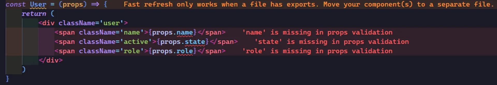
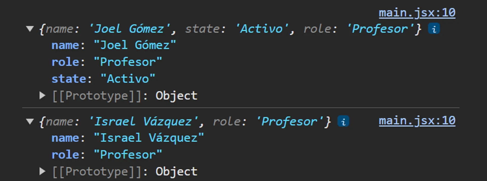
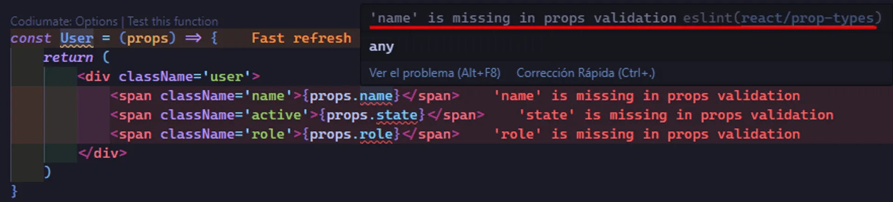
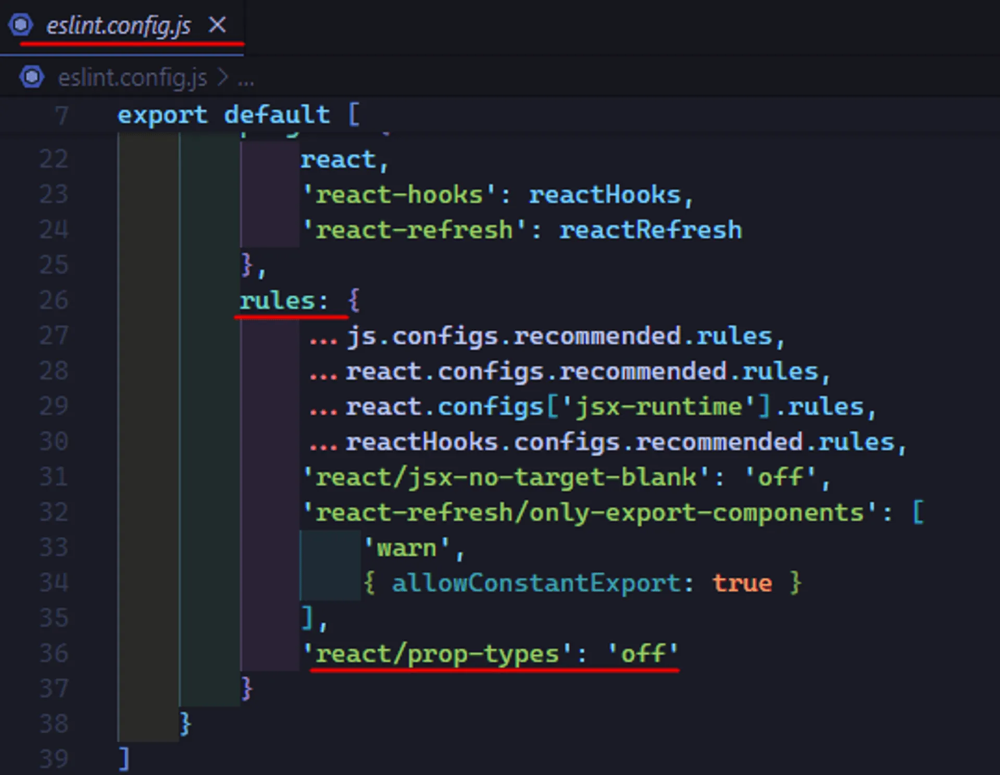
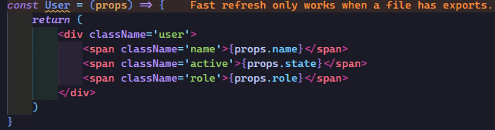
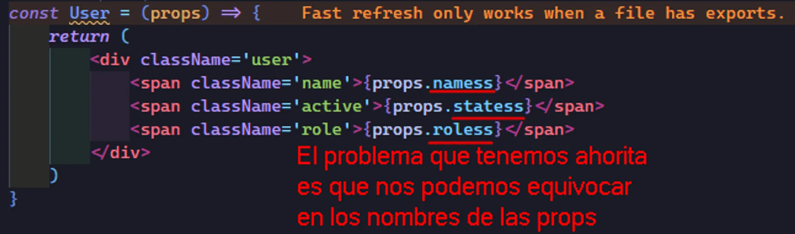

Introducción
Un componente en React es esencialmente una función que recibe un conjunto de propiedades o props y devuelve una estructura de JSX. Si bien esto suena muy similar a una función que simplemente devuelve JSX, lo que distingue a los componentes es la sintaxis más potente y estructurada que nos ofrece React para trabajar con estos elementos. Los componentes permiten reutilizar código, manejar el estado interno, y gestionar propiedades para crear interfaces interactivas y dinámicas.
En este capítulo estaremos convirtiendo el código de reutilización que vimos en el capítulo anterior, a un componente.
const getUser = ({ name, state = 'Activo', role }) => (
<div className='user'>
<span className='name'>{name}</span>
<span className='active'>{state}</span>
<span className='role'>{role}</span>
</div>
)
const app = (
<div className='list'>
{getUser({ name: 'Joel Gómez', role: 'Profesor' })}
{getUser({ name: 'Israel Vázquez', role: 'Profesor' })}
</div>
)
Al concluir entenderemos la sintaxis de un componente y como pasar sus props.
Sintaxis de un componente
Nombres declarativos para componentes
El nombre de un componente debe ser declarativo, es decir, debe describir qué hace el componente en lugar de cómo lo hace. Esto sigue la filosofía declarativa de React, donde la intención es centrarse en qué debe mostrarse o suceder, dejando los detalles de implementación como secundarios.
Imperativo vs. Declarativo:
- Imperativo: MostrarBoton()
- Declarativo: Boton
Esto hace que el código sea más legible y fácil de entender para otros desarrolladores o incluso para ti mismo en el futuro.
Los componentes deben comenzar con mayúscula
En React, todos los componentes deben tener nombres que empiecen con una letra mayúscula. Esto es una convención importante porque React usa este detalle para diferenciar entre un elemento nativo de HTML (como <div/>, <h1/>, etc.) y un componente React creado por el usuario como se suele decir. Si tu componente se llama, por ejemplo, "componente" con una letra minúscula, React lo trataría como si fuera una etiqueta HTML personalizada en lugar de un componente.
El uso del return en los componentes
Todo componente debe incluir un return, ya que este es el que se encarga de devolver el JSX que se va a renderizar en la interfaz. Si no se incluye, el componente no mostrará nada.
Hasta este punto nuestro código quedará de la siguiente manera.
- Nombre de componente de manera declarativa "User"
- Primer letra mayúscula "U"
- Uso de return para devolver JSX que es un objeto
const User = () => {
return (
)
}
Uso de props
Los componentes pueden recibir un parámetro llamado props, que es un objeto que contiene todas las propiedades que se le pasan al componente. Las props son una forma de hacer que los componentes sean dinámicos y reutilizables, ya que permiten pasar datos de un componente padre a un componente hijo.
Ejemplo básico de props:
const User = (props) => {
return <p>Hola, {props.nombre}</p>
}
Aquí, props es un objeto que puede contener múltiples propiedades como nombre, edad, etc
Para acceder a cada propiedad, usamos la sintaxis, por ejemplo props.nombre.
Entonces, sabiendo esto, nuestro componente quedará de la siguiente manera.
//'Saldrá un warning de eslint -> name' is missing in props validation eslint (react/prop-types)
const User = (props) => {
return (
<div className='user'>
<span className='name'>{props.name}</span>
<span className='active'>{props.state}</span>
<span className='role'>{props.role}</span>
</div>
)
}
Nos aparece un warning y un error de eslint.
Si miramos como se ve nuestro componente en el editor de código miraremos mejor el warning y el error.

El mensaje de warning indica que Fast Refresh solo puede funcionar correctamente cuando el archivo que estás editando tiene exportaciones (exports). Esto sucede porque Fast Refresh necesita saber qué partes del código son módulos exportables para poder actualizarlos selectivamente. Si tienes componentes en un archivo que no tiene ningún export, React no puede identificar qué necesita actualizarse.
Para quitar este warning basta con poner un export a nuestro componente, pero no lo haremos ya que aún no vemos la modularización de nuestros componentes, pero ya sabemos como solucionarlo.
El error que nos dá es de eslint y más adelante en este mismo capítulo explicaremos que es y como solucionarlo.
De vuelta con el objeto props, para que nos quede mas claro cuando ocupamos props.name props.state y props.role.
Lo que estamos haciendo es acceder a las propiedades del objeto props.
Este objeto props, React lo genera automáticamente cuando el componente recibe props (propiedades), y estas se pasan desde el componente padre al hijo. Esto lo veremos a continuación.
Sintaxis de Ejecución del Componente
Los componentes se ejecutan como una etiqueta JSX
Una de las razones por las que los componentes se ejecutan como si fueran etiquetas JSX (por ejemplo, <MiComponente />) es porque esta sintaxis hace que sea fácil identificar qué partes del código son componentes personalizados creados por el usuario, en lugar de etiquetas HTML estándar.
Esto es muy útil desde un punto de vista visual, ya que ayuda a diferenciar de manera clara los elementos nativos de HTML de los componentes creados para nuestra aplicación.
Ejemplo de uso:
Pasando props al ejecutar un componente
Un componente es una etiqueta JSX y las etiquetas JSX pueden recibir props y las props en JSX se pasan a través de la etiqueta de apertura y de esta manera se transmiten al objeto props.
Así ejecutariamos nuestro componente User que tenemos hasta ahora.
const User = (props) => {
return (
<div className='user'>
<span className='name'>{props.name}</span>
<span className='active'>{props.state}</span>
<span className='role'>{props.role}</span>
</div>
)
}
const app = (
<div className='list'>
//Así ejecutamos nuestro componente pasandole sus props
<User name='Joel Gómez' state='Activo' role='Profesor' />
<User name='Israel Vázquez' role='Profesor' />
</div>
)
Como podemos ver pasamos sus props en el componente padre (Aquí es cuando se crea el objeto props cuando ejecutamos el componente), y estas props se pasan a los hijos.
Cuando usas <User name='Joel Gómez' />, estás pasando una propiedad llamada name con el valor 'Joel Gómez' al componente User. React toma todas las propiedades que se pasan al componente y las agrupa en un objeto llamado props. Así, props.nombre será igual a 'Joel Gómez' dentro del componente User.
Para ver mas claro el objeto props lo imprimiremos por consola para ver que está guardando las props que le pasamos al momento de ejecutar el componente.
//Props se crea cuando ejecutamos el componente y es ahí donde se agregan las props
const User = (props) => {
// Mostramos por consola el objeto props
console.log(props)
return (
<div className='user'>
<span className='name'>{props.name}</span>
<span className='active'>{props.state}</span>
<span className='role'>{props.role}</span>
</div>
)
}
const app = (
// Al ejecutar el componente le pasamos las props al objeto props
<div className='list'>
<User name='Joel Gómez' state='Activo' role='Profesor' />
<User name='Israel Vázquez' role='Profesor' />
</div>
)
Podemos ver que el objeto props guarda las propiedades que le pasamos al momento de ejecutar el componente.

Quitando warning de eslint react/prop-types
Que significan estos errores que nos da ESLint.

Bueno, pues, React nos esta recomendado utilizar una libreria muy famosa dentro de React llamada react/prop-types, que se utiliza para tipar los componentes, para poder decirle que parámetros tiene ya que JavaScript como tal no permite marcar los parámetros que tiene este props, es decir utilizando JavaScript vanilla, no podemos indicarle que propiedades hay y cuales no. Tenemos que ser nosotros quienes controlemos eso.
Esta libreria es una libreria de terceros no es propia de React ni se le parece y realmente no se recomienda utilizar, ya que hay estrategias para evaluar estas propiedades si es que queremos hacerlo y como dejar todo esto un poquito más funcional sin necesidad de recurrir a librerias de terceros.
De momento lo que tenemos que hacer es que ESLint no nos marque este error, para eso debemos de poner la regla de "react/prop-types" como 'off' dentro de las reglas del archivo de configuración de ESLint.

De esta manera ya no nos molesta con el error.

El problema que podemos tener ahora es que nos podemos equivocar en el nombre de las props, pero esto es algo que estaremos viendo despúes con técnicas que podemos hacer para controlar esto.

¿Por qué props es un objeto y no una sucesión de parámetros?
Quizás te hayas preguntado ¿Por qué las props de un componente son un objeto? ¿Por qué no nos permiten ponerlas como una sucesión de parámetros como se hace en una función?.
Lo primero es que si ponemos las props como una sucesión de parámetros, estariamos obligando a pasar esas props siempre en el mismo orden.
const Componente = (prop1, prop2, prop3) => {}
Si React hubiera optado por esa sintaxis, nos veriamos obligados a siempre pasar las props en ese orden.
Otra cosa, es que al decidir React que las props fueran un objeto, nosotros podemos omitir alguna prop y esta no se pintaria.